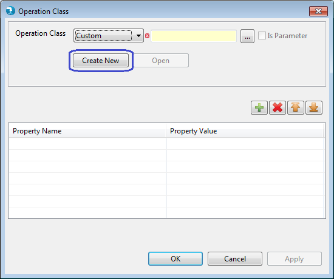
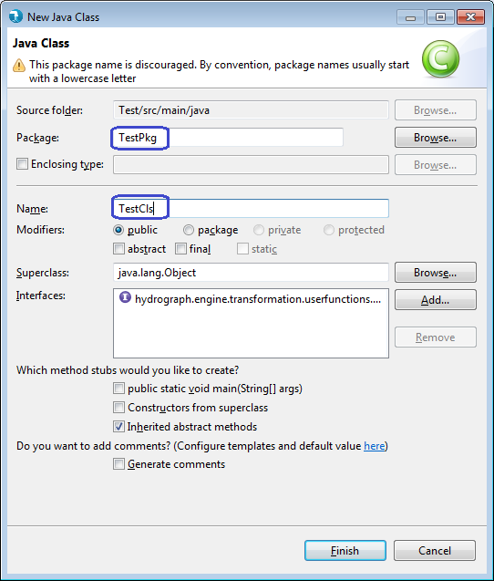
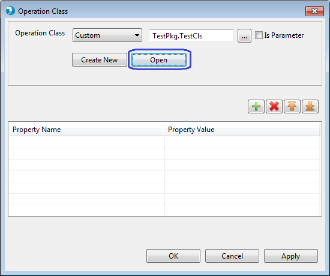
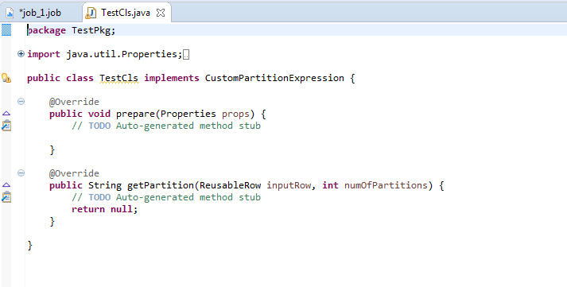
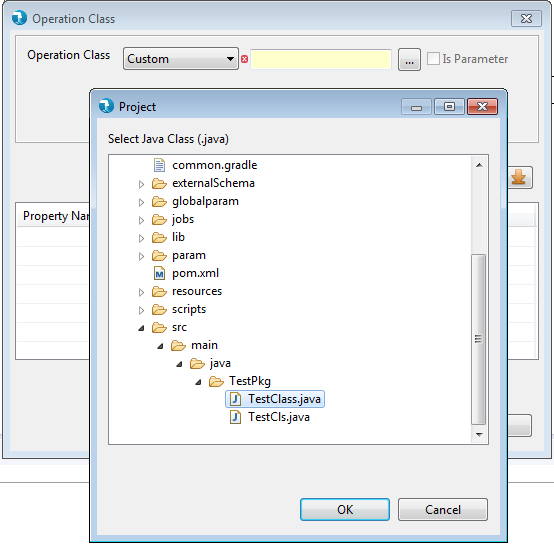

Filter Operation Class Window
Operation class defines the operations we can perform on input data using the Filter components. Operation class is a mandatory attribute. Aggregate, Cumulate, Normalize components requires to build a Custom Operation Class. With these component user can create new custom classes or use the already available classes in the current ELT project. Transform and Filter Component have options to use expression editor along with operation class.
User can create new custom classes or use the already available classes in the workspace.
Creating new custom class
To create a new custom operation class, select "Custom" in the operation class drop down and click on "Create New". The "New Java Class" window will open.

Fig 1
In New Java Class Window, Click "Browse" to select Source Folder.
Specify the Package Name and Name of new class to be created and click on "Finish".

Fig 3
Once the Operation class window displays the Package and Class you created, click "Open" to write your custom class code.

Fig 4

Fig 5
Alternatively, instead of creating a new java class, an existing java class, compatible with the filter component can also be used.
To use an existing java class, click "Browse" button and select the class available in the workspace.

Fig 6
The operation properties grid is present on the operation class window. This grid is used to define operation properties. Every row added to this grid defines a new operation property. A property has a unique name and a value. The property value can also be parameterized by using the parameter syntax (i.e. using @{}).
These property values can be accessed in the operation classes.
Operation property may or may not be specified. It is not mandatory.